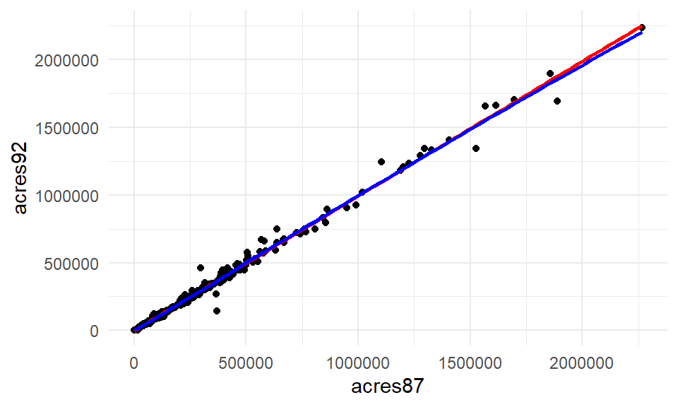
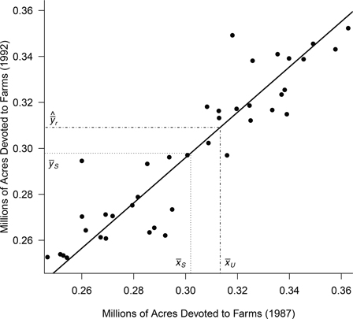

library(tidyverse)
agsrs <- read_csv(here::here("data/agsrs.csv"))Ratio and Regression Estimation
Introduction
Motivating Example: Estimating number of people living in France in 1802
In the 1800’s, France did not have a population census count. So some fancy mathematician by the name of Laplace decided he was going to figure it out using sampling and some ideas behind measure of association.
He sampled 30 communities throughout the country, totaling 2,037,615 people.
He reasoned that communities with large populations are also likely to have a large number of registered births. So he looked back in the prior 3 years and counted the number of live births in those communities, finding it to be 215,599. Dividing that number by 3, he calculated this was about 71,866.33 births per year.
He then divided the total number of people, by the number of births pear year, \(\frac{2037615}{71866.33} = 28.352845\), as an estimate of the number of people alive for each new birth.
Assuming this ratio is similar throughout France, he concluded that the total population of France could be estimated by multiplying the total number of annual births in the country by that ratio \(28.352845\).
Laplace was not interested in the number of births on it’s own, but used it as auxilary information to estimate the desired quantity of total population.
Using Auxilary information
Sometimes due to difficulty or cost of data collection, researchers may collect data on secondary measures that are known to be associated with the measure of interest, then leverage that association to improve the precision of the estimators.
Two methods to do this are called Ratio and Regression estimation.
Ratio Estimation in SRS
Let \(y_{i}\) be the measure of interest, and \(x_{i}\) be the auxiliary/secondary/subsidiary variable. Both measurements MUST be taken on the same sample unit \(i\).
Then in a population of size \(N\) the totals for each measure are
\[ t_{y} = \sum_{i=1}^Ny_{i} \qquad t_{x} = \sum_{i=1}^Nx_{i} \]
and their ratio is calculated as \[ B = \frac{t_{y}}{t_{x}} = \frac{\mu_{y}}{\mu_{x}}. \]
Example: Farm yield
Suppose the population consists of agricultural fields of different sizes. Let
- \(y_{i}\) = bushels of grain harvested in field \(i\)
- \(x_{i}\) = acreage of field \(i\).
Then
- \(B\) = average yield in bushels per acre
- \(\mu_{y}\) = average yield in bushels per field
- \(t_{y}\) = total yield in bushels
If we take an SRS, we can then calculate the ratio estimates for these values using
- \(\hat{B} = \frac{\bar{y}}{\bar{x}} = \frac{\hat{t}_y}{\hat{t}_x}\)
- \(\hat{\bar{y}_r} = \hat{B}\mu_x\)
- \(\hat{t}_{yr} = \hat{B}t_x\)
Why use Ratio Estimation
Example: Total acreage of farms in 1992, based on data from ’87.
Pretend it’s 1992 and since we did a census of farmland in 1987 we the true population values. But that was super expensive so we want to find a better way for this year.
In 1987 a total of \(t_x\) = 964,470,625 acres were devoted to farms across the 3,078 counties in the US, with average acres per county \(\mu_x\) = 313,343.3. Use these values along with data taken from an SRS (agsrs.csv) to estimate the total and average number acres devoted to farmland in 1992.
Calculate the correlation coefficient, and create a scatterplot of
acres87againstacres92first to assess the linear correlation between these two measures and to comment on if it’s even reasonable to use 1987 values to estimate 1992 amounts.Use the population values from 1987 along with the data in the variable
acres92to calculate \(\hat{B}, \hat{\bar{y}}_r\), and \(\hat{t}_{yr}\) for 1992.Compare \(\hat{t}_{yr}\) to \(\hat{t}_{srs}\) for 1992.
- Visualize the relationship between acres in 1987 and 1992 on the SRS of \(n=300\). It is important to use both a linear model straight line, and the lowess smoother line to assess how well a linear model may fit this relationship.
ggplot(agsrs, aes(x=acres87, y=acres92)) + geom_point() +
geom_smooth(method="lm", col="red", se=FALSE) +
geom_smooth(col="blue", se=FALSE) + theme_minimal()
cor(agsrs$acres87, agsrs$acres92)[1] 0.995806The blue and red lines are nearly overlapping, and the correlation coefficient is incredibly high at 0.996. A linear model fits this relationship well, and so the ratio estimate is reasonable to use.
- Calculate estimated ratio and estimators for average and total acrage.
Estimated Ratio \(\hat{B} = \frac{\bar{y}}{\bar{x}}\)
x.bar <- mean(agsrs$acres87)
y.bar <- mean(agsrs$acres92)
(B.hat = y.bar/x.bar)[1] 0.9865652Ratio Estimator for \(\hat{\bar{y}}_r = \hat{B}\mu_x\)
B.hat * 313343.3[1] 309133.6Ratio Estimator for \(\hat{t}_{yr} = \hat{B}t_x\)
B.hat * 964470625[1] 951513191- Compare the ratio estimator of the total to the estimate obtained under SRS
y.bar*3078[1] 916927110In this case, the ratio estimator is smaller than the estimate obtained from the SRS directly. Let’s see why this may be the case.

- We notice that \(\bar{x} \lt \mu_x\), so our SRS underestimates the true population mean from 1987.
- Since \(x\) and \(y\) are positively correlated, it is reasonable to expect that \(\bar{y}\) will similarily underestimate \(\mu_y\)
- However, the ratio estimator \(\hat{\bar{y}}_r\) gives a more precise estimate of \(\mu_y\) because \(\bar{y}\) is multiplied by the factor \(\frac{\mu}{\bar{x}}\), which corrects for that underestimation.